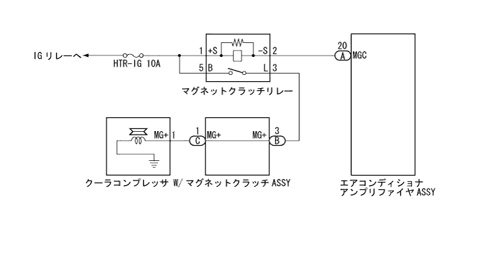
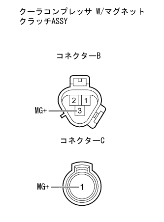
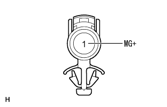
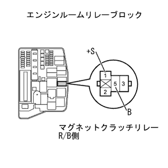
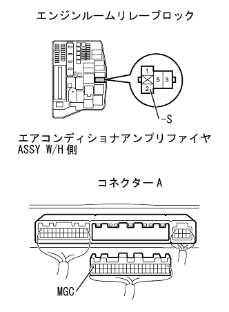

Heater & Air Conditioner System Magnetic Clutch Relay Circuit |

| Step 1 | Inspect Fuse (Instrument Panel Junction Block (HTR-IG)) |
Using SST (Toyota electrical tester), measure the resistance of HTR-IG.
| Tester Connection | Condition | Standard |
|---|---|---|
| HTR-IG | Always | Below 1 Ω |
|
| ||||
| OK | |
| Step 2 | Inspect Magnetic Clutch Relay |
Remove the magnetic clutch relay from the engine room relay block.
 |
Using SST (Toyota electrical tester), measure the resistance between each terminal of the connector.
| Tester Connection | Condition | Standard |
|---|---|---|
| 1 - 2 | Always | 167Ω |
| 3 - 5 | Always | 10k Ω or higher |
| 3 -5 | Apply battery voltage between terminals 1 and 2 of the connector | Below 1 Ω |
|
| ||||
| OK | |
| Step 3 | Inspect Cooler Compressor w/ Magnetic Clutch Assembly |
 |
Disconnect connector B of the cooler compressor w/ magnetic clutch assembly.
Disconnect the magnetic clutch assembly connector.
Using SST (Toyota electrical tester), measure the resistance between each connector terminal and between the terminals and body ground.
| Tester Connection (Terminal Symbol) | Condition | Standard |
|---|---|---|
| B3(MG+) - C1(MG+) | Always | Below 1 Ω |
| B3 (MG+) - Body ground | Always | 10k Ω or higher |
|
| ||||
| OK | |
| Step 4 | Inspect Magnetic Clutch Assembly |
 |
Using SST (Toyota electrical tester), measure the resistance between the connector terminal and the ground wire.
| Tester Connection (Terminal Symbol) | Condition | Standard |
|---|---|---|
| 1 (MG+) - Ground wire | Always | Below 1 Ω |
Inspect the magnetic clutch operation when the battery positive is connected to the connector terminal and the battery negative to the ground wire.
|
| ||||
| OK | |
| Step 5 | Inspect Wire Harness or Connector (Power Source System - Magnetic Clutch Relay) |
for reference. |
Using SST (Toyota electrical tester), measure the voltage between each terminal of the engine room relay block and body ground.
| Tester Connection (Terminal Symbol) | Condition | Standard |
|---|---|---|
| 1 (+S) - Body ground | IG ON | 11 to 14V |
| 5 (B) - Body ground | IG ON | 11 to 14V |
|
| ||||
| OK | |
| Step 6 | Inspect Wire Harness or Connector (Magnetic Clutch Relay - Air Conditioner Amplifier Assembly) |
for reference.Disconnect connector A of the air conditioner amplifier assembly.
 |
Using SST (Toyota electrical tester), measure the resistance between the connector terminals of the vehicle wire harness and between the terminals and body ground.
| Tester Connection (Terminal Symbol) | Condition | Standard |
|---|---|---|
| 2(-S) - A20(MGC) | Always | Below 1 Ω |
| 2 (-S) - Body ground | Always | 10k Ω or higher |
|
| ||||
| OK | ||
| ||